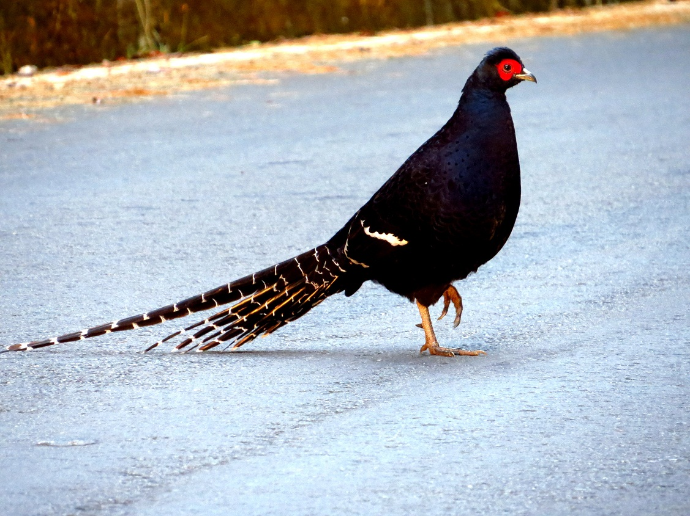

雄鳥
體長72-87公分；翼長21.5-23公分；尾長52-60公分全身為深藍黑色而有光澤；背部以下各羽有藍色羽緣；翅膀有一白色翼帶，尾羽甚長，胸、腹部為紫藍色，眼部為裸露的皮膚，呈血紅色。尾長。


雌鳥
體長46-52公分；翼長18.5-21.5公分；尾長17-21公分；體型較小全身大致為橄欖褐色帶有淺色縱斑，眼部為裸露的皮膚，呈暗紅色。尾短。
生態習性
為台灣特有種，棲息於台灣的中、高海拔山區的闊葉混合林、針葉林及箭竹草原中。生性謹慎，遇干擾時常緩緩躲入草叢中，較少驚飛。
領域性強，常單獨行動。習慣邊走邊覓食，食性極廣，包含木本、草本植物之嫩芽、果實、種子、昆蟲和蚯蚓。